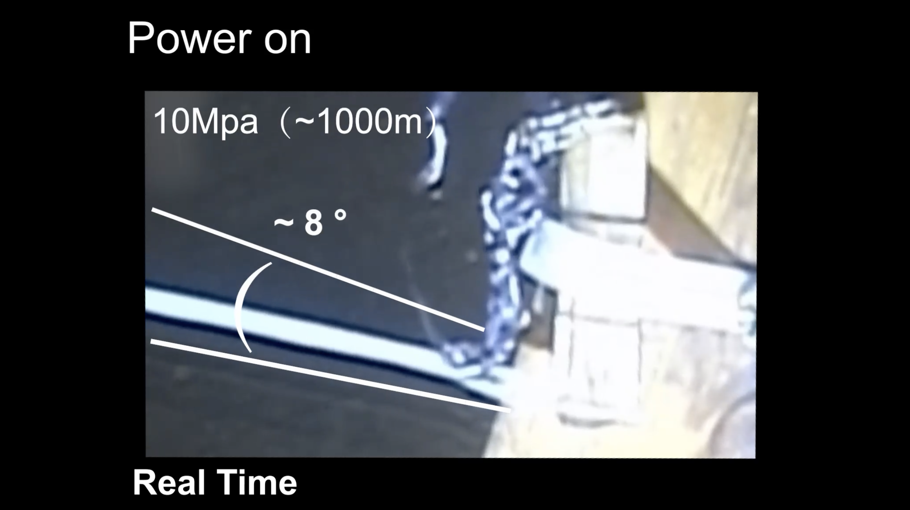

Knotted artificial muscles-appears in Advanced Materials

|
Artificial muscles are yet to match their biological counterparts, due to inferior actuation speed, magnitude, mode, or adaptability. Prof. Ke Liu and his collaborators (Mr. Cong Wang and Prof. Huai Yang) proposed a novel type of artificial muscles, capable of high stroke and fast linear contractions. The artificial muscles consist of knots braided from 3D printed LCE fibers and thin heating threads. The unique hierarchical, braided knot structure offers amplified linear stroke, force rate, and damage-tolerance, as verified by both numerical simulations and experiments. In particular, the square knotted artificial muscle shows reliable cycles of actuation at 1Hz in 3000m depth underwater. Looking ahead, the knotted artificial muscles can empower novel biomedical devices and soft robots to explore various environments, from inside human body to the mysterious deepsea. The work was published in Advanced Materials on April 20, 2024.
|
Movies
|  |  |
|
| Movie 1 | Movie 2 | Movie 3 |